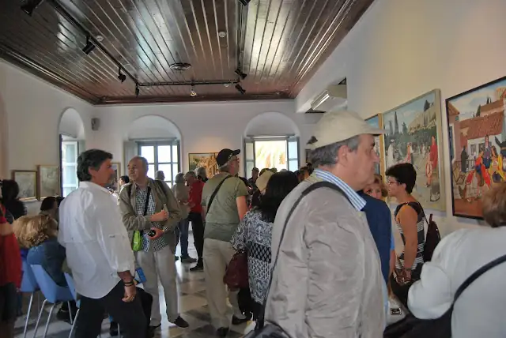
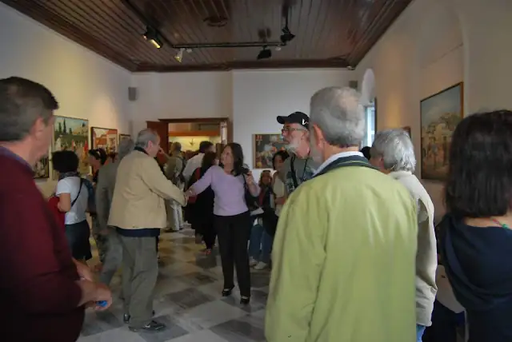
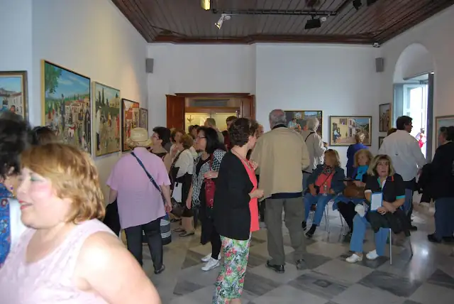
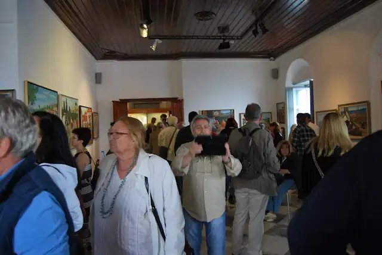
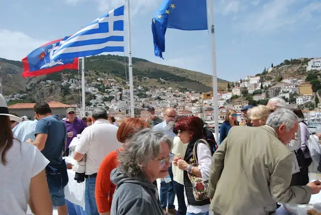
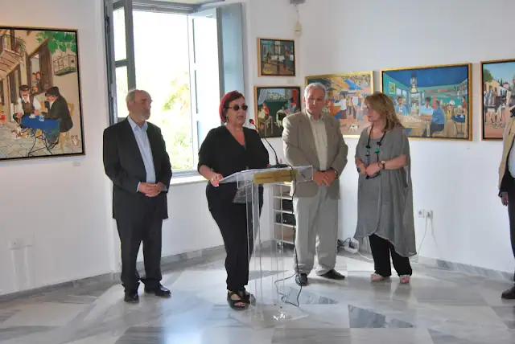
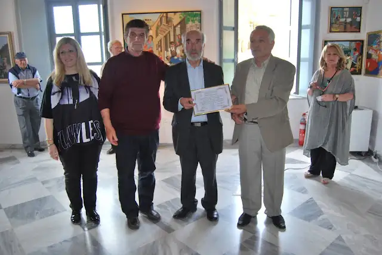
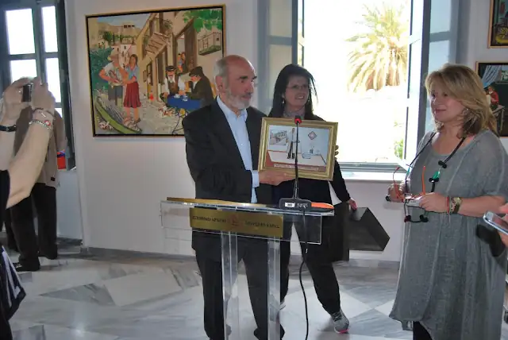

ΕΚΘΕΣΗ: ΙΣΤΟΡΙΚΟ ΑΡΧΕΙΟ - ΜΟΥΣΕΙΟ ΎΔΡΑΣ
Μάιος 2016 (7 - 31 Μαΐου 2016)
ΘΕΜΑ: "Ταξίδι στο χρόνο..."
Το Ιστορικό Αρχείο - Μουσείο της Ύδρας σας καλεί σε ένα "ταξίδι στο χρόνο..." μέσα από την ζωγραφική του σύγχρονου λαϊκού ζωγράφου Νώντα Ρεντζή.
Ζώντας, όλοι μας, μέσα στην πολύβουη πόλη, που κατακλύζεται από τους βάρβαρους ήχους της καθημερινότητας, η επίσκεψη σε αυτήν την έκθεση του καλλιτέχνη είναι μια βόλτα πίσω στον χρόνο.
Ένα ταξίδι στην εποχή που ακόμα ακούγαμε την μουσική του ανέμου ανάμεσα στα φύλλα των δέντρων, το γλυκό μουρμούρισμα των κυμάτων, τον ήχο της επαφής της σόλας με τα χαλίκια των μονοπατιών... τα γαϊδουράκια στα σοκάκια, που ειδικά τον Μάιο δίνουν το δικό τους ρεσιτάλ.
Ένα ταξίδι στην εποχή που οι γειτονιές ξεχείλιζαν από ζωή και ακούγονταν οι φωνές των περιπλανώμενων επαγγελματιών που διαλαλούσαν τα εμπορεύματα ή τις υπηρεσίες τους και των παιδιά που όταν δεν τραβούσαν την φούστα της μάνας για παγωτό, κάστανα ή κεράσια έπαιζαν αμέριμνα στα σοκάκια.
Ένα ταξίδι στην εποχή που οι στεγνωμένοι από κούραση άνθρωποι του μόχθου ρουφούσαν με λαχτάρα κάθε στιγμή ξεκούρασης, κάθε ήχο, χρώμα και μυρουδιά γύρω τους και κάθε στιγμή χαράς που θα τους ξαναγεμίσει δύναμη να συνεχίσουν.
Ένα ταξίδι στην εποχή που οι μαστόροι, με την ευφυΐα και την προσήλωση στην τέχνη τους, κατάφερναν να ευκολύνουν και να ομορφύνουν την καθημερινότητα μας και να ζωντανεύουν την οικονομία ενός τόπου ρημαγμένου από πείνα και πολέμους.
Σήμερα, αυτούς τους ανθρώπους που βγήκαν οριστικά από το κάδρο των ενδιαφερόντων μας, όπως όλοι οι κλασσικοί λαϊκοί ζωγράφοι, ο Νώντας Ρεντζής τους ξανατοποθετεί μέσα από τα δικά του κάδρα, σαν φύλακας της συλλογικής μας μνήμης, στο κέντρο της νοσταλγίας μας. Τους βάζει μπροστά στα μάτια μας να μας διηγηθούν, αυτοί, την πιο "σιωπηλά φλύαρη" νεότερη ιστορία μας, τον πόθο και την αγάπη για ζωή, το ταξίδι τους μέσα στο χρόνο της ύπαρξης μας.
Έτσι οι επισκέπτες αυτής της έκθεσης θα μπορέσουν να ζωντανέψουν ξεχασμένες μνήμες και οι νεώτεροι από αυτούς, που δεν είχαν μέχρι τώρα επαφή με αυτό το πρόσφατο παρελθόν, θα μπορέσουν να ζωντανέψουν ξεχασμένες ιστορήσεις γερόντων και κοντινών, πριν αυτές βυθιστούν μέσα στην λήθη.
Ο αγγειοπλάστης, η υφάντρα, ο καλαθάς, η μοδίστρα, ο καστανάς, ο γανωματής, ο τροχιστής, ο πεταλωτής, ο σαμαρτζής, ο παγωτατζής, ο μανάβης, ο καρεκλάς, η φουρνάρισσα και οι πλύστρες, οι γεωργοί, οι ξυλοκόποι, οι βαρελάδες, οι κυνηγοί, οι ψαράδες και πολλοί άλλοι από την παρέα τους και ο ίδιος ο Νώντας με τις διηγήσεις του, μας περιμένουν να ανταμώσουμε.
Ένα ταξίδι στο κέντρο της ανθρώπινης ύπαρξης όπου οι μόνοι ήχοι που ακούγονται μας ενώνουν τον πόθο και την αγάπη για ζωή.
Το Ιστορικό Αρχείο - Μουσείο Ύδρας έχει την τιμή και την ευχαρίστηση να σας καλέσει στα εγκαίνια της Έκθεσης του σύγχρονου λαϊκού ζωγράφου Νώντα Ρεντζή "ταξίδι στο χρόνο...", την Κυριακή 15 Μαΐου και ώρα 11.30 π.μ.
Η έκθεση ξεκινάει στις 7 Μαΐου και τελειώνει στις 31 Μαΐου.
Ώρες επισκέψεων: Καθημερινά 9.00 - 16.00









